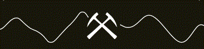

Raegan Tyshkewich BSc. P.Geol
Professional Geologist
Exploration & Development | Geomodeler | Montney Specialist | Quantifying Risk & Uncertainty
Technical Competencies
- Reserovir geomodeling, technical evaluations and assessments
- Identifying, quantifying, and reducing risk and uncertainty
- Operations and wellsite geology
- Exploration- delineate and evaluate new reservoir prospects
- Compile, monitor and detailed analyis of competitor activty
- Development planning and regulatory applications and compliance
- Reseves estimation, volumetrics and reporting
- Land evaluations and recommendations for aquisition/ divesture/ retention
- Delineate and evaluate source/disposal water prospects
- Conducting detailed statistical analysis of technical data
- Geohazard identification and mitigation
Areas of Interest
- 8 yrs Unconvetional liquid
rich Montney
Alberta- Kakwa | Bigstone | Wembly/Elm | Bezanson
British Columbia - Gundy | Groundbirch | Laprise - 6 yrs Unconvetnional heavy
oil Bluesky
PeacRiver(AB)
Encompassing cold and thermal vertical and horizontal production
Montney Areas of Interest

Non-Technical Competencies
- Project management and leadership
- Collaborative and inclusive mindset
- Felxible communication style
- Presentation, documentation and recommendations
- Cross-discipline integration and collabortation
- Intellectual curiosity
- Analytical | Critical thinker
- Results oriented
- Versatile and flexible to changing timelines and deliverables
- Results oriented
- Passionate for lifelong learning and mentorship & coaching others
Computer & Software Competencies
- Geological Software: Petra, Transform, Petrel, Accumap, Geoscout
- Analytical software: Spotfire, MS-Office-Excel, Oracle (Crystal Ball), Power BI
- FrontEnd | Programming Languages: HTML, CSS, Bootstrap, JavaScript, C#
- BackEnd: Node.js, Nodemon, Express.js
- Database: MS-SQL, PostgreSQL, MySQL
- Other: RESTfulAPI, GitHub
*Please refer to Education/Training for more info on
Full-Stack / Software Developer Profile
Raegan Tyshkewich BSc. P.Geol